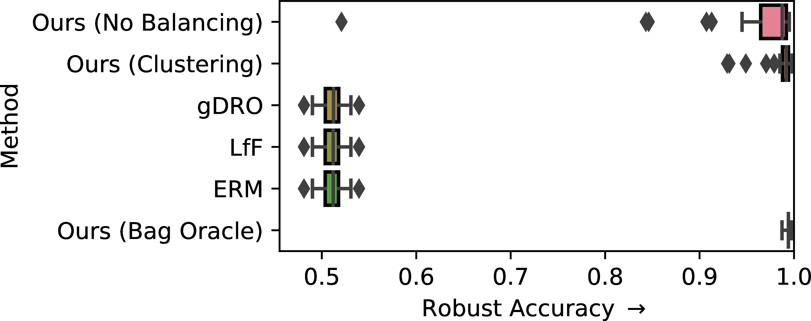

Dataset bias
- Label bias or sampling bias mediated by a special attribute \(s\)
- \(s\) is a sensitive attribute or a spurious feature
- a feature not for prediction
- e.g., forbidden for ethical/legal reasons, or just irrelevant
- demographic group like race, gender
Censoring sampling bias
- A sampling bias that removes some combinations of \(s\) and \(y\) values
- low-quality prediction for those \(s\) with missing sources
Censoring sampling bias
- We assume access to a deployment set with all sources present
- An invariant representation \(z_y\) is produced via distribution matching
- sets of samples are compared from training and context set
- clustering ensures balanced batches
- adversary ensures \(z_y\) cannot be used to distinguish training set and deployment set
Censoring sampling bias — Results
